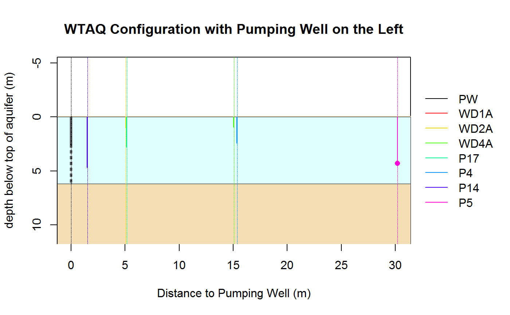

wtConfigurationExample3.RdWTAQ configuration corresponding to sample problem 3 of WTAQ distribution
wtConfigurationExample3()
list with elements general, aquifer, drainage, times, solution, pumpwell, obswells, representing a full WTAQ configuration.
# Get configuration of sample problem 3 of WTAQ distribution cnf <- wtConfigurationExample3()#> Warning: xll was set to 0 since idpr is 0 (No delayed response)#> Warning: rp was set to 0 since idpr is 0 (No delayed response)# Print formatted output of configuration print(cnf)#> General #> - Title: Sample problem 3, with Borden site conditions (minutes, meters). #> - Format: DIMENSIONAL #> #> Aquifer #> - Type: WATER TABLE #> - Thickness (bb) ............: 6.200000 (length) #> - Horiz. hydr. conduct. (hkr): 0.004100 (length/time) #> - Vert. hydr. conduct. (hkz): 0.001740 (length/time) #> - Specific storage (ss) .....: 0.000038 (1/length) #> - Specific yield (sy) .......: 0.250000 #> #> Drainage #> - Type: Drainage with unsaturated-zone characterization (idra = 2) #> - Soil-moisture retention exponent (acc) .................: 5.00 (1/length) #> - Relative hydraulic-conduct. exponent (akk) .............: 31.70 (1/length) #> - Initial unsat.-zone thickn. above capillary fringe (amm): 100.00 (length) #> - Unsat.-zone thickn. above capillary fringe (axmm) ......: 100.00 (length) #> #> Times #> - Type: User-specified times (its = 1) #> #> Solution #> - Type: de Hoog algorithm (isoln = 2) #> - Rel. err. for Newton-Raphson iter. (rerrnr) ...................: 0.000000 #> - Rel. err. sought for accur. of the num. invers. (error) .......: 0.000100 #> - Factor to determ. # terms in finite summations (ntms) .........: 30 #> - # terms in summ. of Fourier series for inv. Lapl. transf. (nnn): 6 #> - Method used to accelerate convergence of Fourier series .......: 3 #> #> Pumped Well ("PW") #> - Type: Partially penetrating pumped well (ipws = 0) #> - Type of diameter: Finite diameter (ipwd = 1) #> - Pumping rate (qq) .......................................: 0.040000 (length^3/time) #> - Radius of screen (rw) ...................................: 0.065000 (length) #> - Inside radius where levels change during pumping (rc) ...: 0.065000 (length) #> - Top of aquifer/initial water table to screen top (zpd) ..: 2.550000 (length) #> - Top of aquifer/initial water table to screen bottom (zpl): 6.200000 (length) #> - Well-bore skin parameter (sw) ...........................: 1.740000 #> - Predefined Times (t): #> t #> 1 0.0373 #> 2 0.0747 #> 3 0.1120 #> 4 0.1493 #> 5 0.2240 #> 6 0.3360 #> 7 0.4853 #> 8 0.6720 #> 9 1.0065 #> 10 1.5270 #> 11 2.2273 #> 12 3.2755 #> 13 4.8443 #> 14 6.7958 #> 15 10.1120 #> 16 15.0737 #> 17 22.4978 #> 18 31.7328 #> 19 47.4245 #> 20 66.9433 #> 21 100.1085 #> 22 149.7313 #> 23 223.9793 #> 24 316.3345 #> 25 473.2577 #> 26 668.4498 #> 27 1000.1053 #> 28 1496.3410 #> 29 2238.8263 #> 30 3162.3827 #> 31 4697.0700 #> 32 6857.0700 #> 33 10457.0700 #> #> Observation Well "WD1A" #> - Type: Observation piezometer (iows = 2) #> - Delayed response: yes (idpr = 1) #> - Radial dist. from axis of pumped well to obs. well (r) .....: 1.510000 (length) #> - Top of aquifer/initial water table to piezometer center (zp): 0.940000 (length) #> - Inside radius of standpipe where levels change (rp) ........: 0.025000 (length) #> - Length of screened interval (xll) ..........................: 0.350000 (length) #> - Predefined Times (t): #> t #> 1 0.3360 #> 2 0.4853 #> 3 0.6720 #> 4 1.0065 #> 5 1.5270 #> 6 2.2273 #> 7 3.2755 #> 8 4.8443 #> 9 6.7958 #> 10 10.1120 #> 11 15.0737 #> 12 22.4978 #> 13 31.7328 #> 14 47.4245 #> 15 66.9433 #> 16 100.1085 #> 17 149.7313 #> 18 223.9793 #> 19 316.3345 #> 20 473.2577 #> 21 668.4498 #> 22 1000.1053 #> 23 1496.3410 #> 24 2238.8263 #> 25 3162.3827 #> 26 4697.0700 #> 27 6857.0700 #> 28 10457.0700 #> #> Observation Well "WD2A" #> - Type: Observation piezometer (iows = 2) #> - Delayed response: yes (idpr = 1) #> - Radial dist. from axis of pumped well to obs. well (r) .....: 5.070000 (length) #> - Top of aquifer/initial water table to piezometer center (zp): 0.890000 (length) #> - Inside radius of standpipe where levels change (rp) ........: 0.025000 (length) #> - Length of screened interval (xll) ..........................: 0.350000 (length) #> - Predefined Times (t): #> t #> 1 0.2240 #> 2 0.3360 #> 3 0.4853 #> 4 0.6720 #> 5 1.0065 #> 6 1.5270 #> 7 2.2273 #> 8 3.2755 #> 9 4.8443 #> 10 6.7958 #> 11 10.1120 #> 12 15.0737 #> 13 22.4978 #> 14 31.7328 #> 15 47.4245 #> 16 66.9433 #> 17 100.1085 #> 18 149.7313 #> 19 223.9793 #> 20 316.3345 #> 21 473.2577 #> 22 668.4498 #> 23 1000.1053 #> 24 1496.3410 #> 25 2238.8263 #> 26 3162.3827 #> 27 4697.0700 #> 28 6857.0700 #> 29 10457.0700 #> #> Observation Well "WD4A" #> - Type: Observation piezometer (iows = 2) #> - Delayed response: yes (idpr = 1) #> - Radial dist. from axis of pumped well to obs. well (r) .....: 15.050000 (length) #> - Top of aquifer/initial water table to piezometer center (zp): 0.840000 (length) #> - Inside radius of standpipe where levels change (rp) ........: 0.025000 (length) #> - Length of screened interval (xll) ..........................: 0.350000 (length) #> - Predefined Times (t): #> t #> 1 0.4875 #> 2 0.6750 #> 3 1.0252 #> 4 1.4930 #> 5 2.1933 #> 6 3.2415 #> 7 4.8103 #> 8 6.7618 #> 9 10.0780 #> 10 15.0397 #> 11 22.4638 #> 12 31.6988 #> 13 47.3905 #> 14 66.9093 #> 15 100.0745 #> 16 149.6973 #> 17 223.9453 #> 18 316.3005 #> 19 473.2237 #> 20 668.4158 #> 21 1000.0713 #> 22 1496.3070 #> 23 2238.7923 #> 24 3162.3487 #> 25 4697.0360 #> 26 6857.0360 #> 27 10457.0360 #> #> Observation Well "P17" #> - Type: Observation piezometer (iows = 2) #> - Delayed response: yes (idpr = 1) #> - Radial dist. from axis of pumped well to obs. well (r) .....: 5.150000 (length) #> - Top of aquifer/initial water table to piezometer center (zp): 2.690000 (length) #> - Inside radius of standpipe where levels change (rp) ........: 0.025000 (length) #> - Length of screened interval (xll) ..........................: 0.350000 (length) #> - Predefined Times (t): #> t #> 1 0.0375 #> 2 0.0750 #> 3 0.1125 #> 4 0.1500 #> 5 0.2250 #> 6 0.3375 #> 7 0.4875 #> 8 0.6750 #> 9 1.0252 #> 10 1.4930 #> 11 2.1933 #> 12 3.2415 #> 13 4.8103 #> 14 6.7618 #> 15 10.0780 #> 16 15.0397 #> 17 22.4638 #> 18 31.6988 #> 19 47.3905 #> 20 66.9093 #> 21 100.0745 #> 22 149.6973 #> 23 223.9453 #> 24 316.3005 #> 25 473.2237 #> 26 668.4158 #> 27 1000.0713 #> 28 1496.3070 #> 29 2238.7923 #> 30 3162.3487 #> 31 4697.0360 #> 32 6857.0360 #> 33 10457.0360 #> #> Observation Well "P4" #> - Type: Observation piezometer (iows = 2) #> - Delayed response: yes (idpr = 1) #> - Radial dist. from axis of pumped well to obs. well (r) .....: 15.360000 (length) #> - Top of aquifer/initial water table to piezometer center (zp): 2.320000 (length) #> - Inside radius of standpipe where levels change (rp) ........: 0.017500 (length) #> - Length of screened interval (xll) ..........................: 0.350000 (length) #> - Predefined Times (t): #> t #> 1 0.6750 #> 2 1.0252 #> 3 1.4930 #> 4 2.1933 #> 5 3.2415 #> 6 4.8103 #> 7 6.7618 #> 8 10.0780 #> 9 15.0397 #> 10 22.4638 #> 11 31.6988 #> 12 47.3905 #> 13 66.9093 #> 14 100.0745 #> 15 149.6973 #> 16 223.9453 #> 17 316.3005 #> 18 473.2237 #> 19 668.4158 #> 20 1000.0713 #> 21 1496.3070 #> 22 2238.7923 #> 23 3162.3487 #> 24 4697.0360 #> 25 6857.0360 #> 26 10457.0360 #> #> Observation Well "P14" #> - Type: Observation piezometer (iows = 2) #> - Delayed response: yes (idpr = 1) #> - Radial dist. from axis of pumped well to obs. well (r) .....: 1.510000 (length) #> - Top of aquifer/initial water table to piezometer center (zp): 4.570000 (length) #> - Inside radius of standpipe where levels change (rp) ........: 0.025000 (length) #> - Length of screened interval (xll) ..........................: 0.350000 (length) #> - Predefined Times (t): #> t #> 1 0.1493 #> 2 0.2240 #> 3 0.3360 #> 4 0.4853 #> 5 0.6720 #> 6 1.0065 #> 7 1.5270 #> 8 2.2273 #> 9 3.2755 #> 10 4.8443 #> 11 6.7958 #> 12 10.1120 #> 13 15.0737 #> 14 22.4978 #> 15 31.7328 #> 16 47.4245 #> 17 66.9433 #> 18 100.1085 #> 19 149.7313 #> 20 223.9793 #> 21 316.3345 #> 22 473.2577 #> 23 668.4498 #> 24 1000.1053 #> 25 1496.3410 #> 26 2238.8263 #> 27 3162.3827 #> 28 4697.0700 #> 29 6857.0700 #> 30 10457.0700 #> #> Observation Well "P5" #> - Type: Observation piezometer (iows = 2) #> - Delayed response: no (idpr = 0) #> - Radial dist. from axis of pumped well to obs. well (r) .....: 30.190000 (length) #> - Top of aquifer/initial water table to piezometer center (zp): 4.300000 (length) #> - Inside radius of standpipe where levels change (rp) ........: 0.000000 (length) #> - Length of screened interval (xll) ..........................: 0.000000 (length) #> - Predefined Times (t): #> t #> 1 480 #> 2 1080 #> 3 1950 #> 4 3420 #> 5 4920 #> 6 6750 #> 7 10530